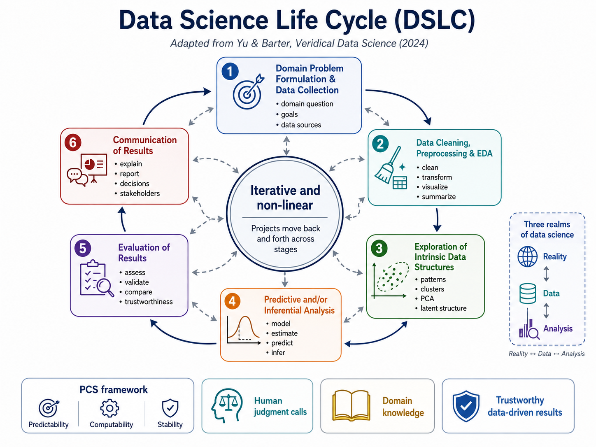
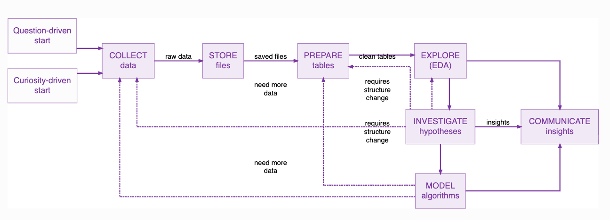

01 Data Science Lifecycle#
1.1 The Reality of Data Science#
Data science is fundamentally iterative rather than strictly linear. It is a process of discovery where new information frequently necessitates a return to previous steps to refine hypotheses or improve data quality.
Every Data Science project can be represented as a series of the following stages (Yu & Barter, 2024):
Domain problem formulation and data collection
Data cleaning, preprocessing, and EDA
Exploration of intrinsic data structures
Predictive and/or inferential analysis
Evaluation of results
Communication of results

Fig. 1 Data Science Life Cycle (DSLC), adapted from Yu and Barter (2024). The lifecycle emphasizes the iterative and non-linear nature of data science and the role of human judgment, domain knowledge, and trustworthy results.#
1.2 The Genesis of a Project: Entry Points and Ideation#
To navigate the DSLC effectively, a data science practitioner must first understand that a project is not born in a code editor; it is born from an entry point into a problem space.
A data science project typically originates from one of two primary motivations. Identifying your Entry Point is the first step in orienting yourself on the map. Once established, you enter the Ideate phase, the most critical moment for defining the Why behind your work.
Entry Point |
Primary Motivation |
|---|---|
Question-driven |
You have a specific business problem and must find data to answer it. |
Curiosity-driven |
You have an interesting dataset and want to explore what questions it might solve. |
Note
Case study Read a Case Study: ACME, Inc. (The Dynamite Division) DataScience PM
As you read, focus on:
How the original business problem is reframed into a more specific data science question.
What role domain knowledge plays before any modeling begins.
How the team moves between lifecycle stages instead of following a perfectly linear process.
What decisions are made about the data before selecting an analytical approach.
Where iteration occurs and what causes the team to revisit an earlier stage.
What makes the final problem actionable for the organization.
Think about this question: At what point does the project become a data science problem rather than just a business request?
1.3 Workflow vs. Lifecycle#
Term |
Meaning |
|---|---|
Workflow |
Technical sequence of working with data |
Lifecycle |
End-to-end journey of a data science project |
Process |
Lifecycle plus people, collaboration, management, and operational practices |
In professional practice, we distinguish between a technical Workflow and a Comprehensive Process.
Data Analysis Workflow = “Technical Route”. Its main focus is on the mechanics of data handling—collecting, storing, and preparing data for modeling.
Comprehensive Data Science Process = “Full Map”. It combines the Project Life Cycle (the business-end-to-operations-end steps) with a Collaboration Framework (the team coordination protocols, such as Data Driven Scrum).
The LSE model serves as a detailed guide for data handling, while the Data Science PM process framework broadens the lifecycle to include validation, deployment, operations, and team coordination (see DataScience PM).

Fig. 2 This LSE workflow represents the typical stages you will move through when conducting any data analysis project#
1.4 The Stages of the Modern Lifecycle#
By synthesizing workflows and frameworks, we can define the six essential stages of a project:
Problem Formulation (Ideate): Identify the problem type. Crucially, ask: “Is this best solved by machine learning or a simpler non-ML solution?”
Data Acquisition & Storage: Determine if data is internal, needs capturing (COLLECT), or must be purchased. Raw data is moved to a target location (STORE) in formats like .json or .csv.
Preparation & Exploration (EDA): This involves cleaning (handling missing values) and descriptive statistics. A unique bridge here is the Investigate Hypotheses stage, where you use statistical tests to validate patterns before committing to complex algorithms.
Modeling & Evaluation:
“Lab” Validation: Testing on historical “test sets” in a controlled environment.
“In the Wild” Validation: Testing on live, real-world data (e.g., A/B testing).
Communication & Deployment: Insights are delivered via dashboards. For production, models are integrated via an API.
Monitoring & Operations (Data Science Ops): Active maintenance to mitigate model drift (performance degradation as the real world changes) and software security patching.
Practical Output Examples
A data scientist produces concrete artifacts at every stage:
COLLECT: API response code (e.g., requests.get(url).json()).
STORE: Raw files (e.g., weather.json).
PREPARE: Cleaned tables (e.g., df.dropna()).
INVESTIGATE: Statistical tests (e.g., scipy.stats.ttest_ind()).
MODEL: Trained models (e.g., RandomForestRegressor.fit()).
COMMUNICATE/DEPLOY: Tableau dashboards, APIs, or Markdown narratives.
1.5 The Power of the Minimal Viable Model (MVM)#
The idea of a Minimal Viable Model (MVM) adapts the lean principle of building the smallest useful version needed to test an assumption and learn from evidence. We do not aim for perfection; we aim for a “sufficient” model that proves the hypothesis.
The Five Outcome Decisions: a team makes one of five strategic moves:
Shift Focus: The data reveals a different problem (loop to Problem Definition).
Add/Clean Data: The model needs better inputs (loop to Data Investigation).
Experiment with Algorithms: The data is good, but the math needs work (restart MVM phase).
Deploy and Enhance: The model is successful; proceed to production.
Cancel Project: The value isn’t there; cut losses and pivot.
1.6 Feedback Loops: Embracing the “U-Turn”#
Dashed arrows in Figure 1 are the “U-turns” that drive accuracy.
When you realize the data cannot answer the original question Then loop back to Collect.
When the model performance is poor due to messy or unscaled inputs Then loop back to Prepare.
When the data reveals a completely new, unexpected pattern Then loop back to Explore.
When the real-world data distribution changes (drift) Then loop back to Operate/Retrain.
1.7 Key Takeaways#
As you move toward your data Science Project, your success will depend less on your ability to write a perfect algorithm and more on your ability to navigate the non-linear map.
Your Checklist for Success:
Domain problem: Do I understand the real-world question and why it matters?
Data: Does the available data actually represent the problem I want to study?
Analysis: Are my methods appropriate for the data and question?
Evaluation: Have I tested whether my conclusions are trustworthy?
Iteration: What evidence would make me return to an earlier stage?
Communication: Can a stakeholder understand and act on the result?
Operations: If this becomes a deployed system, how will it be monitored?
Note
Advice Data science is a “team sport” that requires extreme agility. Whether you are using statistical tests in the investigate phase or deploying an MVM to an API, keep your stakeholders close and your feedback loops tight.
References#
This module draws on selected research articles, open educational resources, and professional documentation.
Cardoso-Silva, J. (2026). The LSE Data Science Workflow. London School of Economics Data Science Institute. https://lse-dsi.github.io/DS105/2025-2026/winter-term/guides/data-science-workflow.html
Data Science PM. (2024). What is a Data Science Life Cycle? https://www.datascience-pm.com/data-science-life-cycle/
Data Science PM. What is the Data Science Process? https://www.datascience-pm.com/data-science-process/
Ries, E. (2011). The Lean Startup: How Today’s Entrepreneurs Use Continuous Innovation to Create Radically Successful Businesses. Crown Business.
Saltz, J., Sutherland, A., & Hotz, N. (2022). Achieving Lean Data Science Agility Via Data Driven Scrum. Proceedings of the 55th Hawaii International Conference on System Sciences. https://aisel.aisnet.org/hicss-55/st/agile_development/2/
Yu, B., & Barter, R. L. (2024). Veridical Data Science: The Practice of Responsible Data Analysis and Decision Making. MIT Press. https://vdsbook.com/